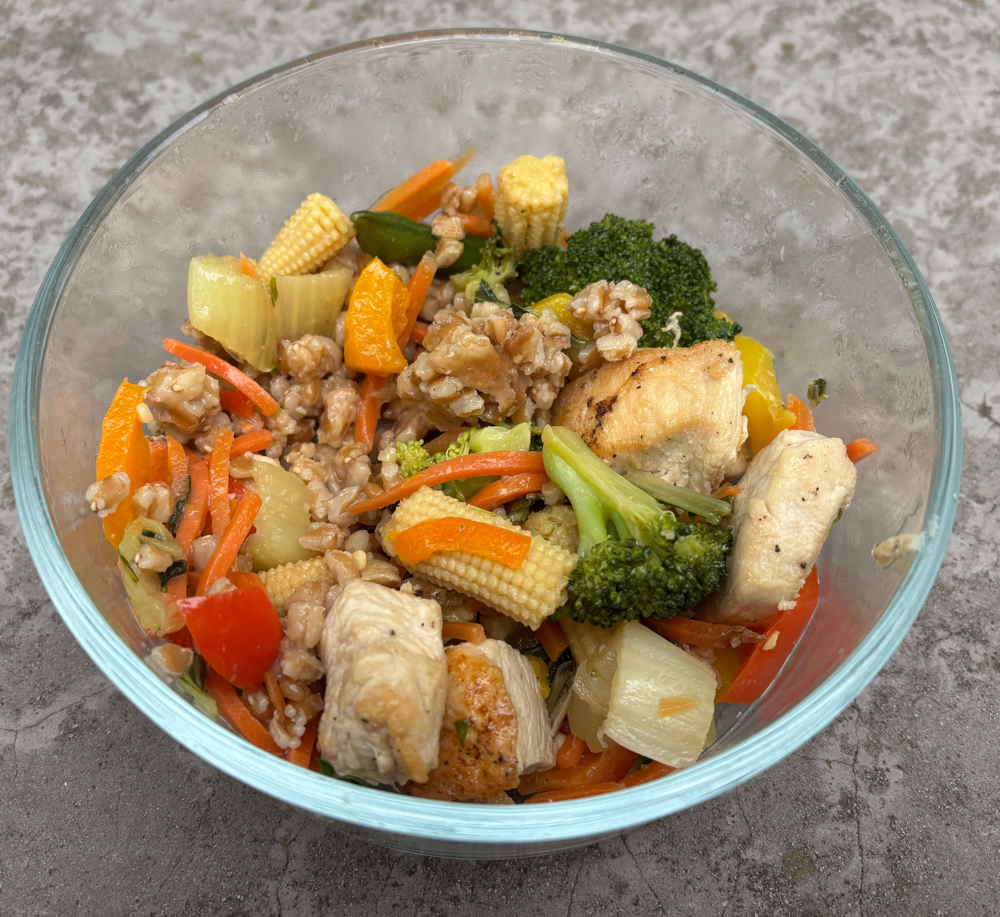

Home
Asian Stirfry Bowl

Ingredients
- Boneless skinless chicken breast cubed
- 1/2 cup Soy Sauce
- Teaspoon cornstarch
- Salt
- Black pepper
- Garlic powder
- 3 tbsp teriyaki sauce
- 3 tbsp oyster sauce
- 1 tbsp honey
- 1 tbsp siracha (change to desired spice level)
- Neutral oil
- Minced garlic
- Minced ginger
- Chopped Head of broccoli
- Shredded carrots
- Bok Choy
- 1 can baby corn
- Red, orange, or yellow bell peppers
- Snap peas
- Grain to serve with if desired
Steps
- Toss the cubed chicken in a bowl with a splash of soy sauce, teaspoon of cornstarch, salt, black pepper, and garlic powder.
- In a medium bowl whisk together 1/2 cup soy sauce, 3 tbsp teriyaki sauce, 3 tbsp oyster sauce, 1 tbsp honey, and 1 tbsp siracha. If the sauce feels too thick add water or chicken broth.
- Heat up a large skillet on medium high heat and add oil. Cook the chicken for 5-7 minutes browning it. After cooked remove the chicken from the pan and set aside.
- In the same pan add garlic and ginger then carrots and the stems of the bok choy for 3 minutes. Add Broccoli and baby corn in the same pan for 3 more minutes. For the last 3 minutes add in the remaining veggies of bell peppers, snap peas, and bok choy leaves. Note if the pan looks dry or things char too fast add a tablespoon of water or broth to create a burst of steam.
- Turn the heat down to medium and add the chicken back in then pour the sauce over everything. Toss until everything is coated about 1-2 minutes. The sauce should go from watery to a thick glossy glaze.
- Serve with a grain like farro or rice if desired.